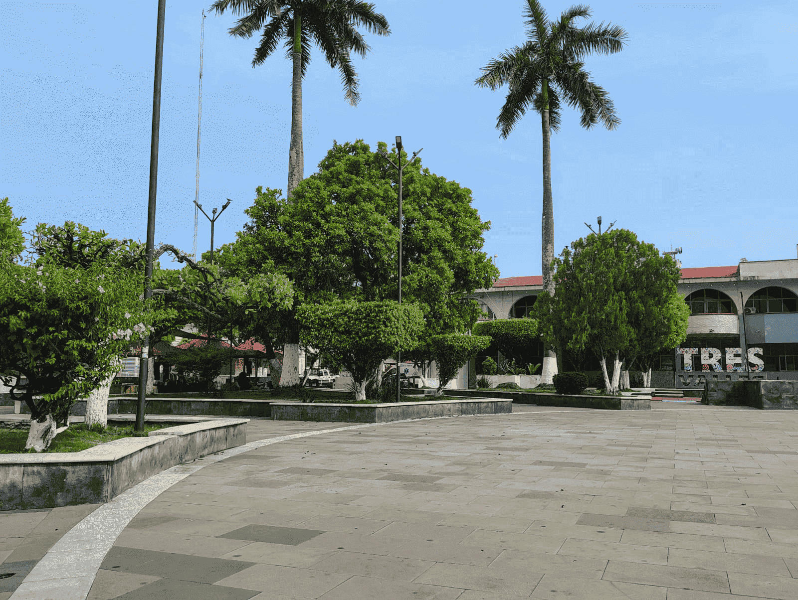
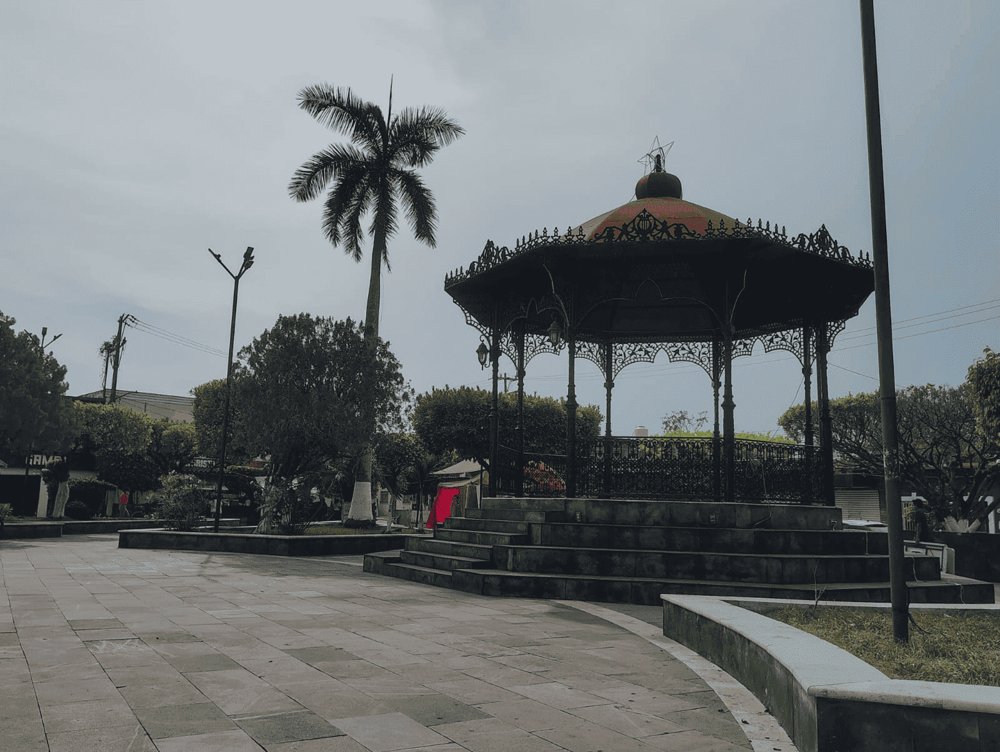
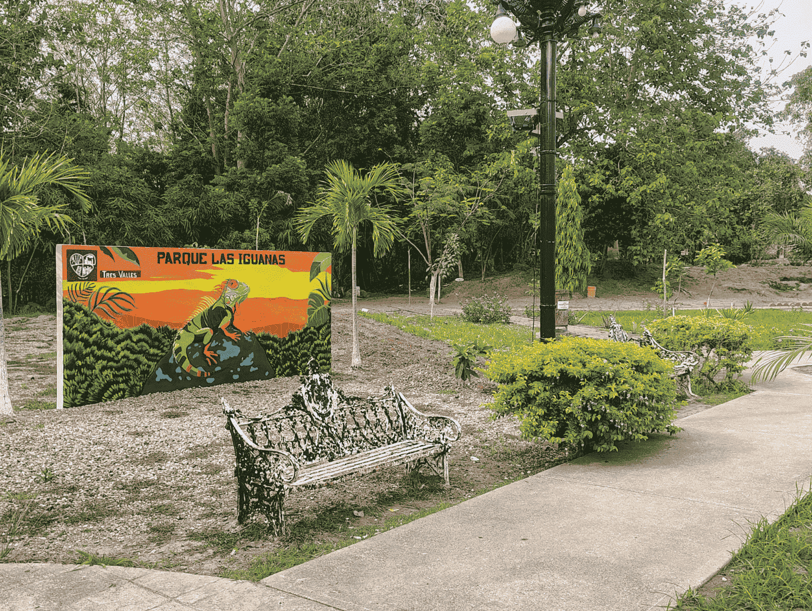
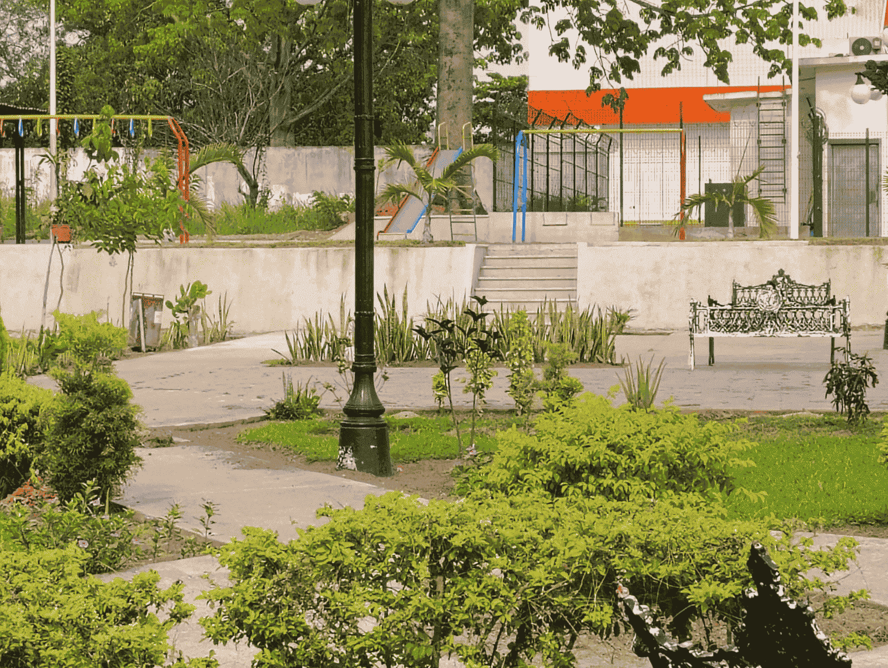
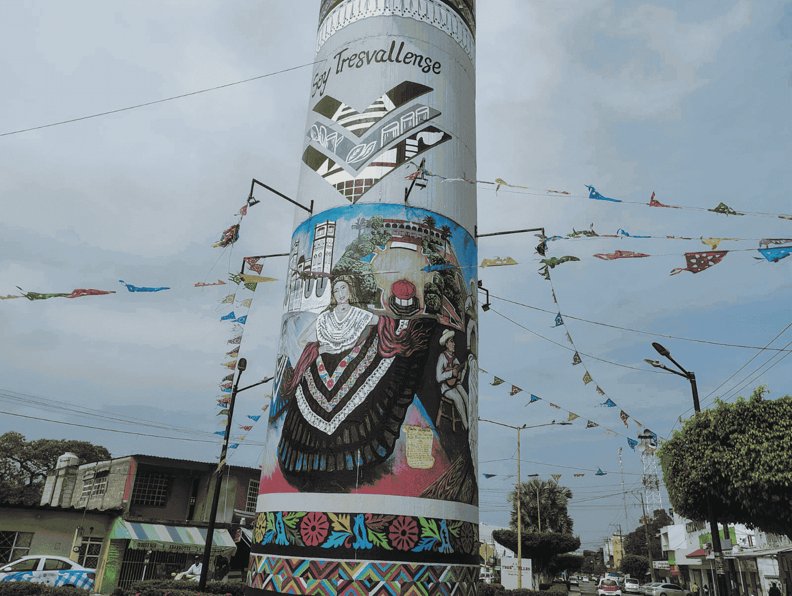
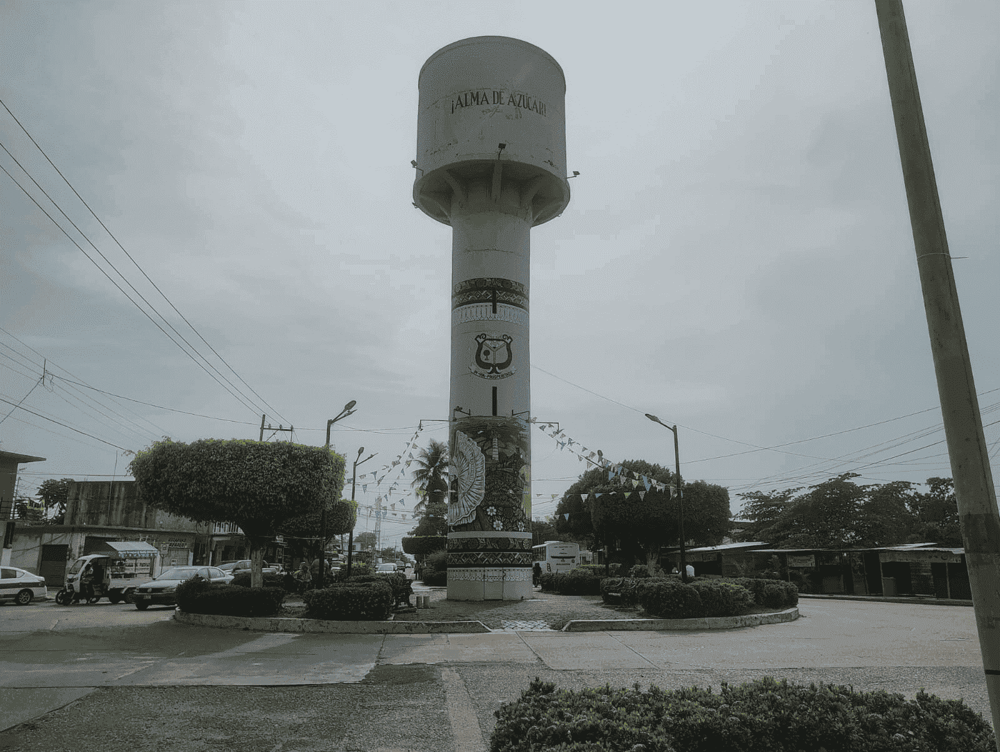
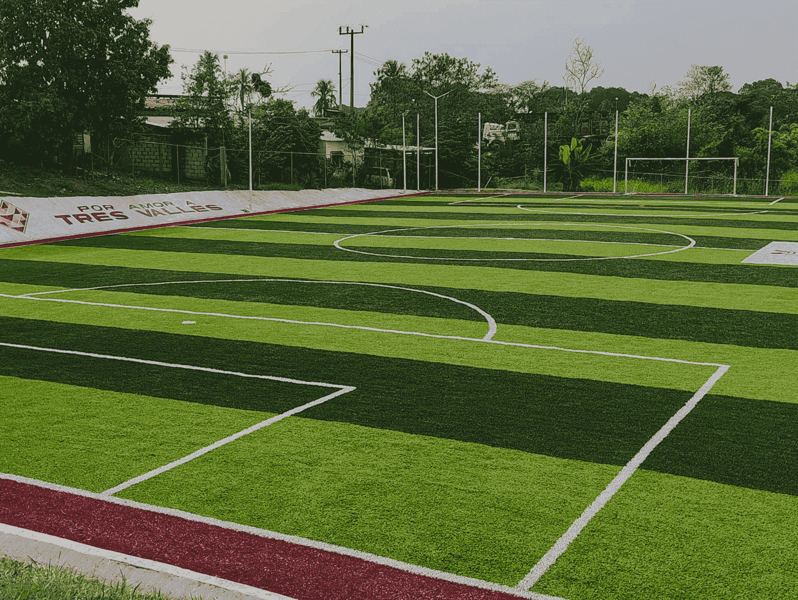
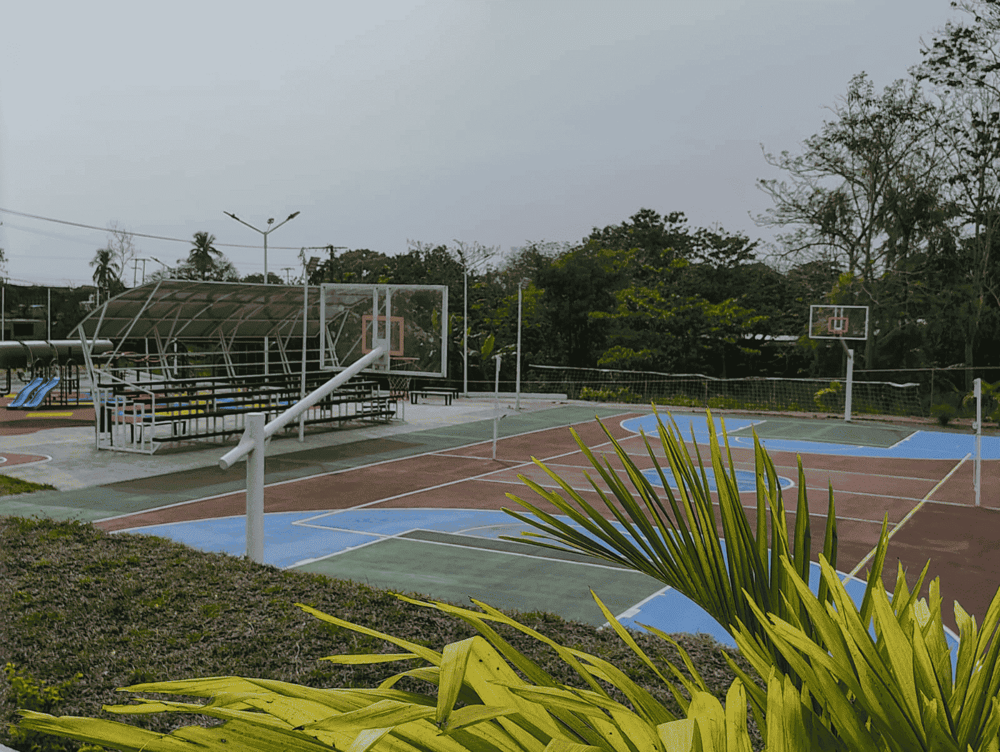
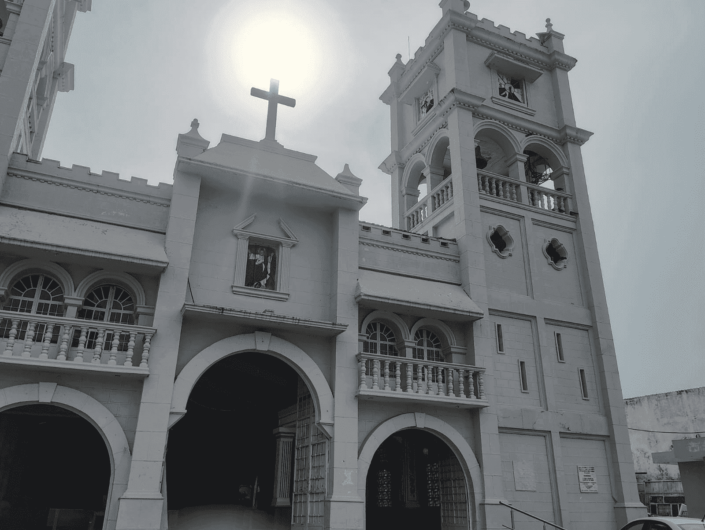
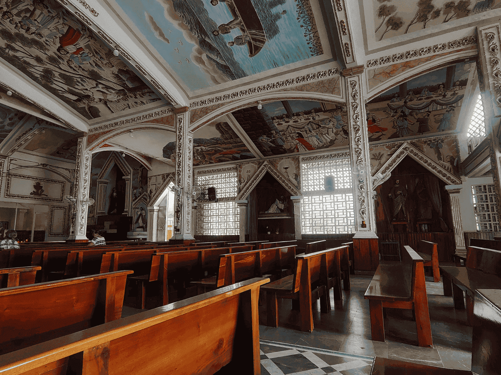

A veces lo único que necesitamos es un lugar tranquilo, bonito y con buena vibra… y eso lo puedes encontrar en Tres Valles, en el hermoso estado de Veracruz. Imagínate caminando por sus parques, sentándote un rato a descansar bajo la sombra de los árboles o simplemente disfrutando del aire fresco mientras convives con tu familia o amigos. Aquí no hay prisas, todo se siente más relajado, más auténtico. Sus lugares de interés no son solo espacios, son experiencias: un paseo tranquilo, una tarde agradable, una charla con gente amable que te hace sentir como en casa. Cada rincón tiene algo especial, algo que te hace desconectarte del estrés y disfrutar el momento. Tres Valles no es un lugar lleno de lujos… pero sí está lleno de algo mucho más valioso: sencillez, calidez y momentos que se quedan contigo. Date la oportunidad de venir, recorrerlo y vivirlo por ti mismo… porque hay lugares que no solo se visitan, se sienten.
Parque Miguel Hidalgo
En el municipio de Tres Valles, el Parque Miguel Hidalgo se posiciona como uno de los espacios públicos más importantes y representativos de la localidad. Ubicado en una zona céntrica, este parque funciona como un punto de encuentro clave para la convivencia social y la vida comunitaria.
El parque destaca por su ambiente tranquilo y su accesibilidad, lo que lo convierte en un lugar ideal para el esparcimiento de personas de todas las edades. Sus áreas verdes, bancas y espacios abiertos permiten a los visitantes disfrutar de momentos de descanso, recreación y convivencia familiar en un entorno agradable.
A lo largo del tiempo, el Parque Miguel Hidalgo ha sido escenario de diversas actividades sociales, culturales y recreativas, consolidándose como un sitio donde se fortalecen los lazos entre los habitantes. Es común observar reuniones familiares, paseos cotidianos y momentos de interacción que reflejan la dinámica social del municipio.
Además de su función recreativa, este parque tiene un valor simbólico importante, ya que forma parte del paisaje urbano e identidad de Tres Valles. Su presencia en el centro del municipio lo convierte en un referente tanto para los habitantes como para quienes visitan la localidad.


Parque Ecológico La Iguana
Este parque fue inaugurado en 2023 como parte de proyectos de mejoramiento urbano. Su principal característica es su enfoque ecológico, ya que fue diseñado para permitir el contacto directo con la naturaleza y fomentar la conciencia ambiental entre los visitantes.
Se destaca como uno de los espacios naturales más representativos y valiosos de la región. Este lugar ofrece a los visitantes la oportunidad de convivir con la naturaleza en un entorno tranquilo, ideal para el descanso y la recreación.
El parque se caracteriza por sus amplias áreas verdes, su vegetación abundante y un ambiente que invita a desconectarse del ritmo cotidiano. Es un espacio adecuado para realizar actividades al aire libre como caminatas, paseos familiares y momentos de relajación, lo que lo convierte en un punto de encuentro para habitantes y visitantes.
Además de su función recreativa, el Parque Ecológico El Águila cumple un papel importante en la conservación del entorno natural, promoviendo el cuidado del medio ambiente y el respeto por los recursos naturales. Su existencia refleja el interés de la comunidad por mantener espacios que favorezcan el equilibrio ecológico y la convivencia responsable.


Tanque de Agua de Tres Valles
En el municipio de Tres Valles, el tanque de agua se presenta como una de las estructuras más representativas de la localidad, no solo por su función esencial en el suministro del recurso hídrico, sino también por su valor como punto de referencia dentro de la comunidad.
Esta infraestructura cumple un papel fundamental en la vida diaria de los habitantes, al garantizar el almacenamiento y distribución de agua potable, un recurso indispensable para el desarrollo del municipio. Gracias a su presencia, se asegura el abastecimiento en hogares, comercios y espacios públicos, contribuyendo al bienestar y la calidad de vida de la población.
Más allá de su función práctica, el tanque de agua se ha convertido con el paso del tiempo en un elemento emblemático de Tres Valles. Su ubicación y visibilidad lo transforman en un punto de orientación y, en muchos casos, en un lugar de encuentro para los habitantes.


Complejo deportivo
En el municipio de Tres Valles, la Unidad Deportiva Municipal se ha consolidado como uno de los principales espacios de recreación, actividad física y convivencia social. Este complejo deportivo representa un punto clave dentro de la vida cotidiana de la comunidad, al fomentar hábitos saludables y fortalecer la integración entre sus habitantes.
El recinto cuenta con diversas instalaciones destinadas a la práctica de múltiples disciplinas, como fútbol, baloncesto y voleibol, así como áreas abiertas que permiten realizar actividades físicas al aire libre. Estas características lo convierten en un espacio accesible tanto para deportistas organizados como para familias que buscan un lugar adecuado para el esparcimiento.
A lo largo del tiempo, la unidad deportiva ha sido escenario de encuentros, torneos locales y actividades recreativas que promueven la participación comunitaria. En este lugar, no solo se desarrollan habilidades deportivas, sino también valores como el trabajo en equipo, la disciplina y la convivencia.


Iglesia Catolica
En el municipio de Tres Valles, la iglesia católica representa uno de los espacios más significativos para la comunidad, no solo por su valor religioso, sino también por su importancia histórica y social. Este recinto se ha consolidado como un punto de encuentro donde convergen la fe, las tradiciones y la identidad cultural de sus habitantes.
A lo largo del tiempo, la iglesia ha sido testigo de innumerables momentos que marcan la vida de las familias: celebraciones como bautizos, primeras comuniones y matrimonios, así como actos solemnes que acompañan etapas importantes de la vida. Cada uno de estos eventos contribuye a fortalecer el sentido de pertenencia y la unión comunitaria.
Durante los fines de semana, especialmente los domingos, el ambiente refleja una notable participación social. Familias completas acuden a las celebraciones religiosas, generando un entorno de convivencia y respeto que trasciende lo espiritual y se convierte en un elemento clave de la vida cotidiana del municipio.


Parafraceado por IA